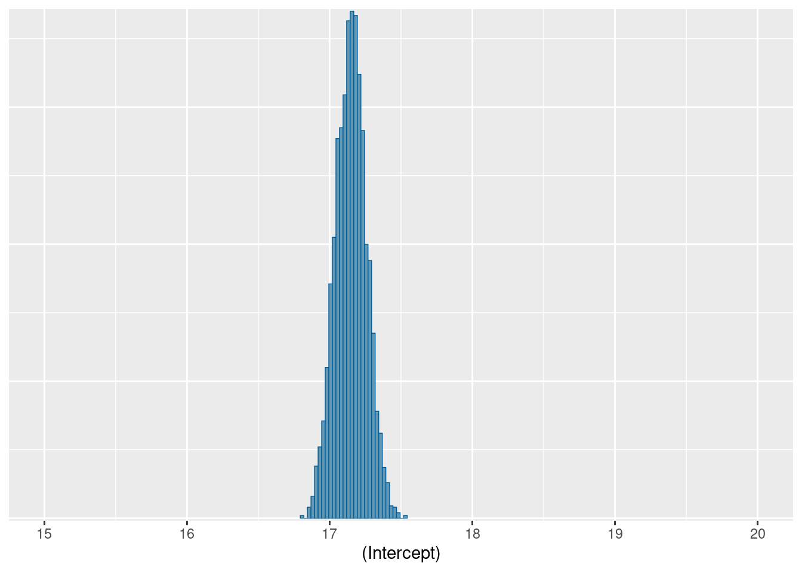
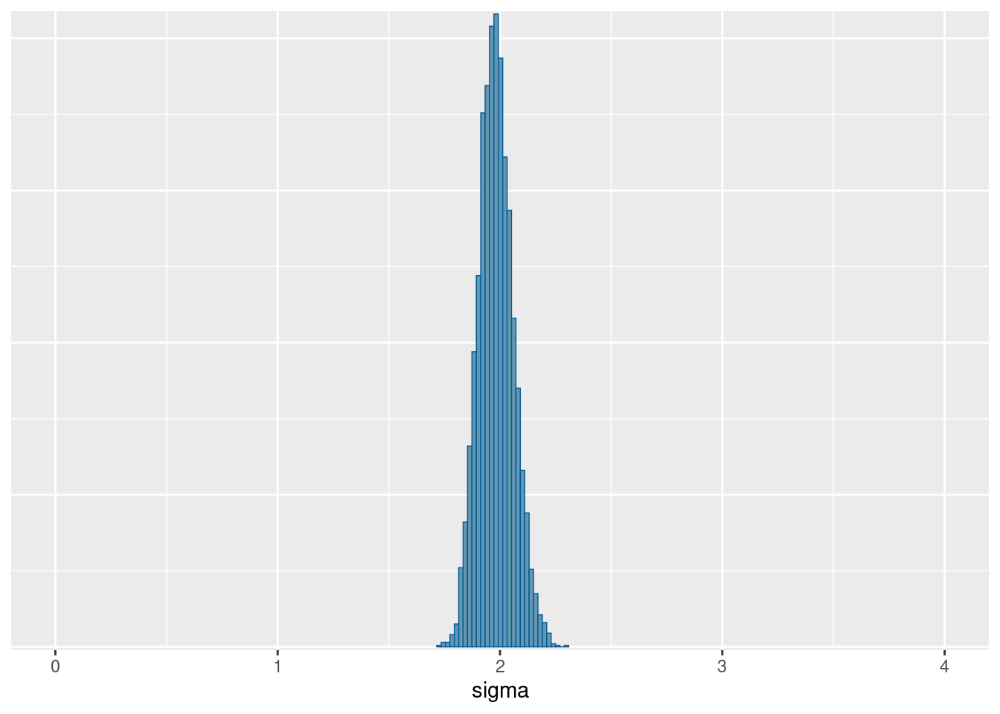
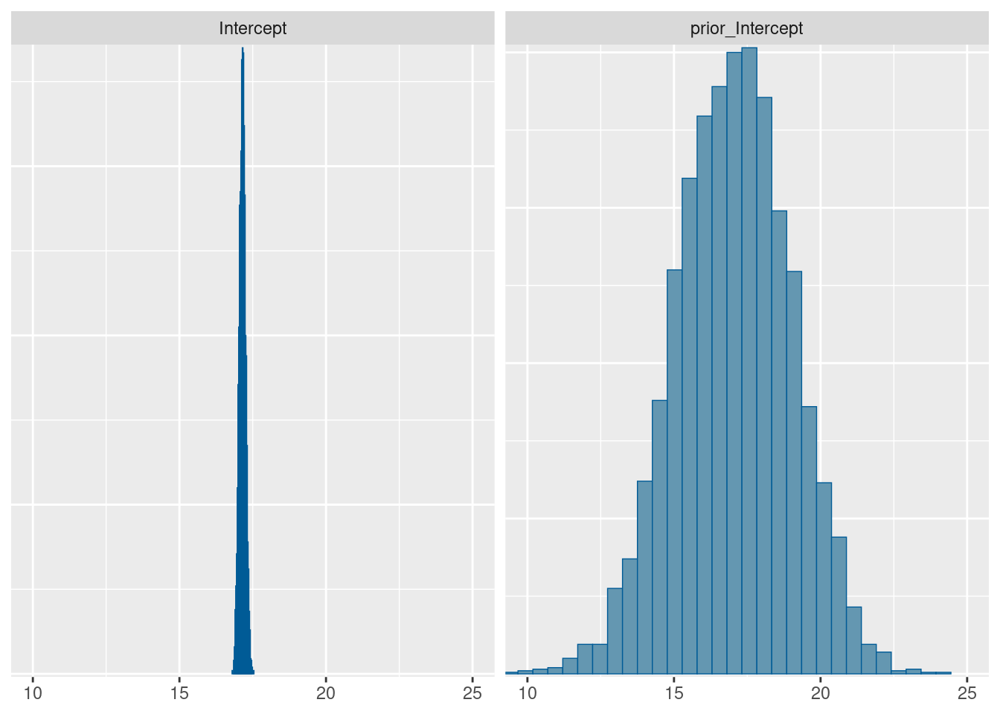
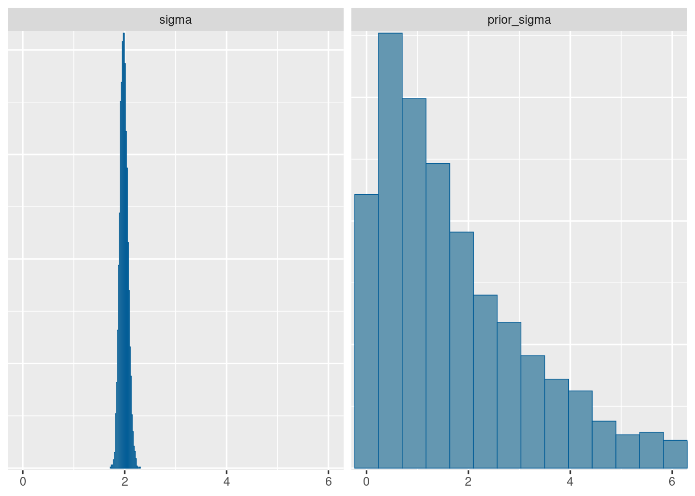
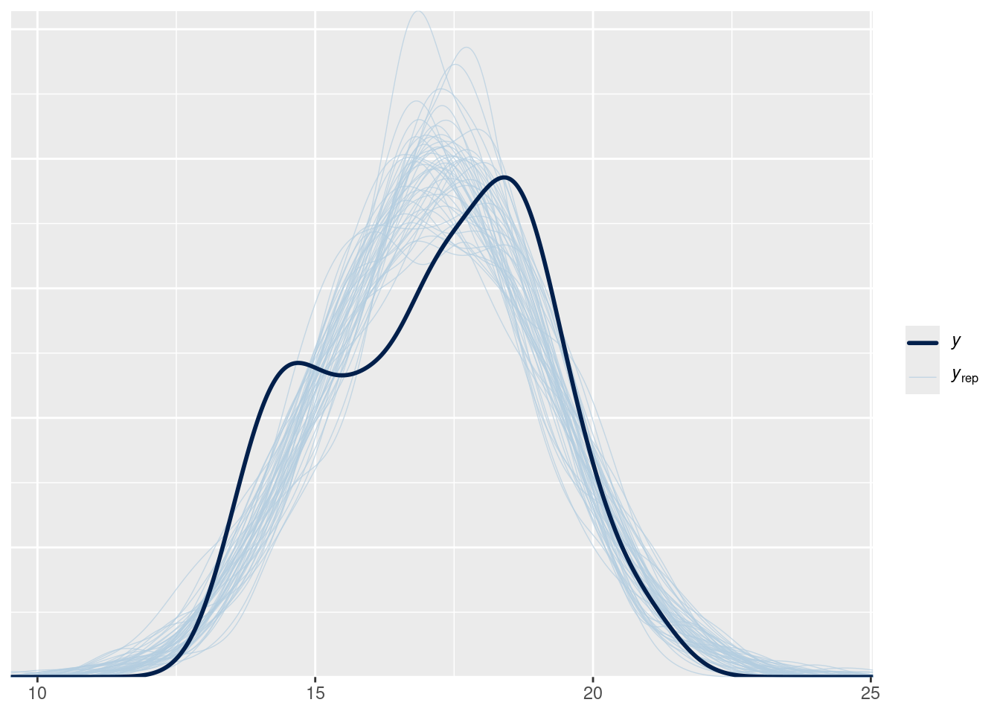
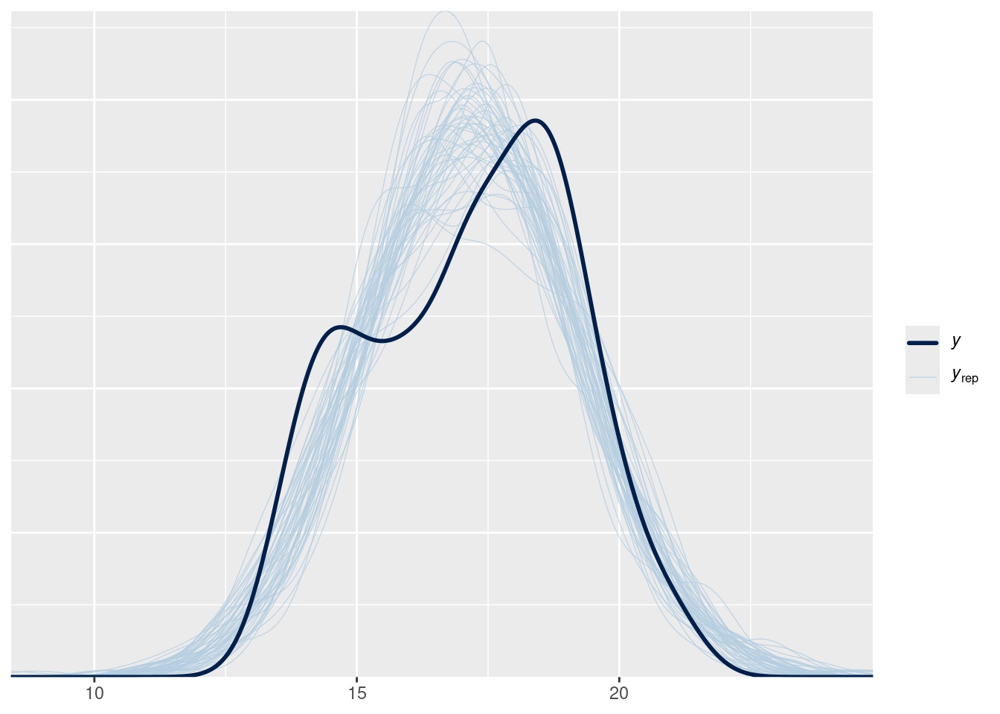

In this section we’re going to look at a simple model with a single predictor variable which divides the dataset into categories. In this example, categories are treated as “fixed” effects.
Load packages and data
library(tidyverse)
── Attaching core tidyverse packages ──────────────────────── tidyverse 2.0.0 ──
✔ dplyr 1.1.4 ✔ readr 2.1.6
✔ forcats 1.0.1 ✔ stringr 1.6.0
✔ ggplot2 4.0.1 ✔ tibble 3.3.0
✔ lubridate 1.9.4 ✔ tidyr 1.3.1
✔ purrr 1.2.0
── Conflicts ────────────────────────────────────────── tidyverse_conflicts() ──
✖ dplyr::filter() masks stats::filter()
✖ dplyr::lag() masks stats::lag()
ℹ Use the conflicted package (<http://conflicted.r-lib.org/>) to force all conflicts to become errors
library(rstanarm)
Loading required package: Rcpp
This is rstanarm version 2.32.2
- See https://mc-stan.org/rstanarm/articles/priors for changes to default priors!
- Default priors may change, so it's safest to specify priors, even if equivalent to the defaults.
- For execution on a local, multicore CPU with excess RAM we recommend calling
options(mc.cores = parallel::detectCores())
library(lme4)
Loading required package: Matrix
Attaching package: 'Matrix'
The following objects are masked from 'package:tidyr':
expand, pack, unpack
library(tidybayes)
Data exploration
Let’s start by taking a look at the Palmer Penguin dataset, specifically the distribution of observations of bill size.
stan_glm
family: gaussian [identity]
formula: bill_dep ~ 1
observations: 342
predictors: 1
------
Median MAD_SD
(Intercept) 17.1 1.9
Auxiliary parameter(s):
Median MAD_SD
sigma 0.7 0.7
------
* For help interpreting the printed output see ?print.stanreg
* For info on the priors used see ?prior_summary.stanreg
pp_check(bill_stan_PD, nreps =20)
prior predictive simulations of penguin bills
Some things to notice about the process and results above:
similar to yesterday’s example, we’ve fit a univariate model to these data. However, because it is a gaussian model, it requires two parameters: a mean and a standard deviation.
although the priors are close to a visual inspection of the histogram, the assumption here is that the prior parameters come from expertise or prior simulations, NOT from looking at the data before modelling!
We can use the posterior package to extract and conveniently summarize the draws from the distribution.
Fit the model
Now we can fit the model directly in rstanarm and look at the results:
stan_glm
family: gaussian [identity]
formula: bill_dep ~ 1
observations: 342
predictors: 1
------
Median MAD_SD
(Intercept) 17.2 0.1
Auxiliary parameter(s):
Median MAD_SD
sigma 2.0 0.1
------
* For help interpreting the printed output see ?print.stanreg
* For info on the priors used see ?prior_summary.stanreg
We don’t have one value for each of our unknown numbers: we have thousands. We need to get a sense of what these possible values mean scientifically. An excellent way to do this is by making as many pictures as possible. We will start with making plots of specific parameters.
We can look at the distributions easily using the bayesplot package.
bayesplot::mcmc_hist(bill_stan, pars ="(Intercept)") +coord_cartesian(xlim =c(15, 20))
`stat_bin()` using `bins = 30`. Pick better value `binwidth`.
bayesplot::mcmc_hist(bill_stan, pars ="sigma") +coord_cartesian(xlim =c(0, 4))
`stat_bin()` using `bins = 30`. Pick better value `binwidth`.


Notice that the distributions do not have the same shape as the prior– this is particularly true for \(\sigma\):
`stat_bin()` using `bins = 30`. Pick better value `binwidth`.

comparisons of priors and posteriors for two parameters, showing how much we’ve learned from the data.

comparisons of priors and posteriors for two parameters, showing how much we’ve learned from the data.
Posterior predictions: the easy way to check your model
In my experience, ecologists (rightly!) care a great deal about model diagnostics. And with good reason: you need to know how much to trust a model before using it to make a scientific claim. Bayes offers a straightforward way to show how well a model is doing: plot model predictions, and compare them to the observed data. This involves using the model as a data generating machine, which we’ll look at next.
Pseudocode
Here is the procedure for generating posterior predictions:
Select some posterior posterior draws.
For each draw, extract all the model parameters
For each draw, plug the sampled parameters in to the model. Use all the same predictors, factors, etc as the original model.
For each draw, draw a random dataset that is the same size and shape as your original data.
Overlay the simulated datasets on the observed data.
Posterior prediction in R
# just get some drawsdraws_matrix <- posterior::as_draws_matrix(bill_stan)## set up a matrix. for every posterior sample, ## (that is, for a value of mu and a value of sigma) ## draw a whole fake dataset from a normal distribution with that mean and sd. nsamples <-50yrep <-matrix(0, ncol =length(penguins_noNAbill$bill_dep), nrow = nsamples)# pick some random rowsset.seed(1234)chosen_samples <-sample(1:nrow(draws_matrix), replace =FALSE,size = nsamples)subset_draws <- draws_matrix[chosen_samples,]for (r in1:nsamples){ yrep[r,] <-rnorm(n =length(penguins_noNAbill$bill_dep), mean = subset_draws[r, "(Intercept)"], sd = subset_draws[r, "sigma"])}bayesplot::ppc_dens_overlay(y = penguins_noNAbill$bill_dep,yrep = yrep)

This is the manual approach, which demonstrates the entire process explicitly. However, thanks to the power of rstanarm, this can also be accomplished in a single line:
pp_check(bill_stan, ndraws =50)
Warning: The following arguments were unrecognized and ignored: ndraws

EXERCISE
Look at the other graphical posterior predictive checks available in the bayesplot package by examining the vignette. Experiment with some different possibilities for these data.
The posterior predictive distribution gives us a straightforward way to test our model’s performance:
we use the model to generate fake observations.
plot these on top of the real data
if the data is a really poor match, we know our model has a distorted view of the world.
Warning: Removed 2 rows containing non-finite outside the scale range
(`stat_bin()`).
Now we can see that the distribution is probably three different distributions, all placed together.
Warning
Sometimes scientists will plot histograms of data at the beginning of a research project, and use the histogram to decide if their data are “normally distributed” or not. This is not helpful! Instead, decide on a model first, and ask yourself what kind of data you expect.
Adding a discrete predictor variable.
Here we extend the model to give each species a different average bill depth. How many parameters are in this model?
A very useful technique, in both R and Stan, is transforming a vector with indexing. Vector indexing requires two vectors: the first contains values we want to select or replicate, the second contains integers giving the positions of the elements we want. For example:
`stat_bin()` using `bins = 30`. Pick better value `binwidth`.
Sampling the species model
EXERCISE
Fit one the species-specific model above using rstanarm. TIP: set the formula to be bill_dep ~ 0 + species. 1. What changes do you need to make to the prior? 2. Visualize the posterior with bayesplot. Does it look better than the model without species? How can you tell?
stan_glm
family: gaussian [identity]
formula: bill_dep ~ 0 + species
observations: 342
predictors: 3
------
Median MAD_SD
speciesAdelie 18.3 0.1
speciesChinstrap 18.4 0.1
speciesGentoo 15.0 0.1
Auxiliary parameter(s):
Median MAD_SD
sigma 1.1 0.0
------
* For help interpreting the printed output see ?print.stanreg
* For info on the priors used see ?prior_summary.stanreg
We can repeat the posterior checking from before:
# Posterior predictive checkbrms::pp_check(bill_spp_stan, type ="dens_overlay", ndraws =50)
Warning: The following arguments were unrecognized and ignored: type, ndraws
The predicted distribution is now much more like the real data!
Further questions & challenges
I recommended that you remove the intercept from the model using bill_dep ~ 0 + species. What changes if you put it back in? why?
Visualizing species – using tidybayes
We can also make figures for each individual species. Here we will move away from using bayesplot and try to visualize our posterior using the handy functions in the tidybayes package.
library(tidybayes)penguins_noNAbill |>select(species) |>distinct() |>add_predicted_draws(bill_spp_stan, ndraws =100) |>ggplot(aes(x = .prediction, y = species, fill = species)) +stat_halfeye()
We can visualize the uncertainty in predicted values AND in group means :
grid <- penguins_noNAbill %>% modelr::data_grid(species)means <- grid %>%add_epred_draws(bill_spp_stan)preds <- grid %>%add_predicted_draws(bill_spp_stan)penguins_noNAbill %>%ggplot(aes(y = species, x = bill_dep)) +stat_interval(aes(x = .prediction), data = preds) +stat_pointinterval(aes(x = .epred), data = means, .width =c(.66, .95), position =position_nudge(y =-0.3)) +geom_jitter(height = .05, pch =21, fill ="orange") +scale_color_brewer() +theme_dark()
Exercises
Level 1
repeat this activity for another variable in the dataset. Does the same code work on bill length? What about body size? What would you change about the model (if anything)
use bayesplot to examine the fit of body size to these data.
Level 2
generate some random groups of your own, with known means. How well does the model fit these data?
Level 3
As you can see, the model assumes the same sigma for all species. what if you relax this?
Optional!
Try this on your own data!
Source Code
---title: Palmer penguins and discrete predictorsdescription: | fitting a model with discrete predictors.execute: freeze: trueformat: html: code-tools: trueeditor_options: chunk_output_type: console---In this section we're going to look at a simple model with a single predictor variable which divides the dataset into categories. In this example, categories are treated as "fixed" effects.## Load packages and data```{r}library(tidyverse)library(rstanarm)library(lme4)library(tidybayes)```## Data explorationLet's start by taking a look at the Palmer Penguin dataset, specifically the distribution of observations of bill size.```{r}#| fig-cap: Histogram of bill depth for all the penguins in the Palmer Penguin dataset.penguins |>ggplot(aes(x=bill_dep)) +geom_histogram(binwidth = .5)```There's quite a lot of variation in these measurements, with a suggestion of perhaps more than one peak in this distribution.There's also some NA values -- we'll drop them before we move on:```{r}penguins_noNAbill <- penguins |>drop_na(bill_dep)```## A simple model$$\begin{align}\text{Bill depth} &\sim \text{Normal}(\mu, \sigma)\\\mu &\sim \text{Normal}(17, 2) \\\sigma &\sim \text{Exponential}(1) \\\end{align}$$### Prior predictive simulation (using rstanarm)```{r}bill_stan_PD <-stan_glm( bill_dep ~1,data = penguins_noNAbill,family =gaussian(),prior_intercept =normal(17, 2),prior_aux =exponential(1),prior_PD =TRUE,chains =4,iter =2000,refresh =0,seed =525600)bill_stan_PD``````{r}#| fig-cap: prior predictive simulations of penguin billspp_check(bill_stan_PD, nreps =20)```Some things to notice about the process and results above:- similar to yesterday's example, we've fit a univariate model to these data. However, because it is a *gaussian* model, it requires two parameters: a mean and a standard deviation.- although the priors are close to a visual inspection of the histogram, the assumption here is that the prior parameters come from expertise or prior simulations, NOT from looking at the data before modelling!We can use the [`posterior` package](https://mc-stan.org/posterior/) to extract and conveniently summarize the draws from the distribution.## Fit the modelNow we can fit the model directly in rstanarm and look at the results:```{r}bill_stan <-stan_glm( bill_dep ~1,data = penguins_noNAbill,family =gaussian(),prior_intercept =normal(17, 2),prior_aux =exponential(0.5),chains =4,iter =2000,refresh =0,seed =525600)bill_stan``````{r}bill_stan |> posterior::summarise_draws() |> knitr::kable()```## Plotting parameters.We don't have one value for each of our unknown numbers: we have thousands. We need to get a sense of what these possible values mean scientifically. An excellent way to do this is by making as many pictures as possible. We will start with making plots of specific parameters.We can look at the distributions easily using the `bayesplot` package.```{r}#| layout-ncol: 2bayesplot::mcmc_hist(bill_stan, pars ="(Intercept)") +coord_cartesian(xlim =c(15, 20))bayesplot::mcmc_hist(bill_stan, pars ="sigma") +coord_cartesian(xlim =c(0, 4))```Notice that the distributions do not have the same shape as the prior-- this is particularly true for $\sigma$:```{r}post_draws <- posterior::as_draws_df(bill_stan)set.seed(525600)ndraws <-nrow(post_draws)prior_draws <-tibble(Intercept =rnorm(ndraws, mean =17, sd =2),sigma =rexp(ndraws, rate =0.5))combined_draws <- post_draws |>transmute(Intercept =`(Intercept)`,sigma = sigma,prior_Intercept = prior_draws$Intercept,prior_sigma = prior_draws$sigma )``````{r}#| layout-ncol: 2#| fig-cap: comparisons of priors and posteriors for two parameters, showing how much we've learned from the data.bayesplot::mcmc_hist( combined_draws,pars =c("Intercept", "prior_Intercept")) +coord_cartesian(xlim =c(10, 25))bayesplot::mcmc_hist( combined_draws,pars =c("sigma", "prior_sigma")) +coord_cartesian(xlim =c(0, 6))```## Posterior predictions: the easy way to check your modelIn my experience, ecologists (rightly!) care a great deal about model diagnostics. And with good reason: you need to know how much to trust a model before using it to make a scientific claim. Bayes offers a straightforward way to show how well a model is doing: plot model predictions, and compare them to the observed data. This involves using the model as a data generating machine, which we'll look at next.### PseudocodeHere is the procedure for generating posterior predictions:- Select some posterior posterior draws.- For each draw, extract all the model parameters- For each draw, plug the sampled parameters in to the model. Use all the same predictors, factors, etc as the original model.- For each draw, draw a random dataset that is the *same size and shape* as your original data.- Overlay the simulated datasets on the observed data.### Posterior prediction in R```{r}# just get some drawsdraws_matrix <- posterior::as_draws_matrix(bill_stan)## set up a matrix. for every posterior sample, ## (that is, for a value of mu and a value of sigma) ## draw a whole fake dataset from a normal distribution with that mean and sd. nsamples <-50yrep <-matrix(0, ncol =length(penguins_noNAbill$bill_dep), nrow = nsamples)# pick some random rowsset.seed(1234)chosen_samples <-sample(1:nrow(draws_matrix), replace =FALSE,size = nsamples)subset_draws <- draws_matrix[chosen_samples,]for (r in1:nsamples){ yrep[r,] <-rnorm(n =length(penguins_noNAbill$bill_dep), mean = subset_draws[r, "(Intercept)"], sd = subset_draws[r, "sigma"])}bayesplot::ppc_dens_overlay(y = penguins_noNAbill$bill_dep,yrep = yrep)```This is the manual approach, which demonstrates the entire process explicitly. However, thanks to the power of rstanarm, this can also be accomplished in a single line:```{r}pp_check(bill_stan, ndraws =50)```::: callout-tip### EXERCISELook at the other graphical posterior predictive checks available in the `bayesplot` package by examining [the vignette](https://mc-stan.org/bayesplot/articles/graphical-ppcs.html). Experiment with some different possibilities for these data.:::The posterior predictive distribution gives us a straightforward way to test our model's performance:1. we use the model to generate fake observations.2. plot these on top of the real data3. if the data is a really poor match, we know our model has a distorted view of the world.## Different groups are differentlet's add in differences among species```{r}penguins |>ggplot(aes(x = bill_dep, fill = species))+geom_histogram(binwidth = .5) +scale_fill_brewer(palette ="Dark2")```Now we can see that the distribution is probably three different distributions, all placed together.::: callout-warningSometimes scientists will plot histograms of data at the beginning of a research project, and use the histogram to decide if their data are "normally distributed" or not. This is not helpful! Instead, decide on a model first, and ask yourself what kind of data you expect.:::## Adding a discrete predictor variable.Here we extend the model to give each species a different average bill depth. How many parameters are in this model?$$\begin{align}\text{Bill depth}_{i} &\sim \text{Normal}(\mu_{\text{species}[i]}, \sigma) \\\mu_{\text{species}} &\sim \text{Normal}(17, 2) \\\sigma &\sim \text{Exponential}(2) \\\end{align}$$::: {.callout-tip collapse="true"}## Quick detour : vector indexingA **very** useful technique, in both R and Stan, is transforming a vector with *indexing*. Vector indexing requires two vectors: the first contains values we want to select or replicate, the second contains integers giving the positions of the elements we want. For example:```{r}some_values <-c("taco", "cat", "goat", "cheeze", "pizza")positions <-c(1,1,2,2,3,1,1,5)some_values[positions]```This works for number values as well, and is very useful when you want to do simulations! let's simulate three groups with different averages.```{r}set.seed(525600)some_means <-c(12, 17, 19)some_labels <-c("taco", "cat", "goat")df_of_means <-data.frame(index =rep(1:3, each =42)) |>mutate(the_mean = some_means[index],labels = some_labels[index],obs =rnorm(n =length(the_mean),mean = the_mean,sd =1))df_of_means |>ggplot(aes(x = obs, fill = labels)) +geom_histogram()```:::### Sampling the species model::: callout-tip### EXERCISEFit one the species-specific model above using rstanarm. TIP: set the formula to be `bill_dep ~ 0 + species`. 1. What changes do you need to make to the prior? 2. Visualize the posterior with `bayesplot`. Does it look better than the model without species? How can you tell?:::::: {.callout-note collapse="true"}### SOLUTION```{r}bill_spp_stan <-stan_glm( bill_dep ~0+ species,data = penguins_noNAbill,family =gaussian(),prior =normal(17, 2),prior_aux =exponential(0.5),chains =4,iter =2000,refresh =0,seed =525600)bill_spp_stan```We can repeat the posterior checking from before:```{r}# Posterior predictive checkbrms::pp_check(bill_spp_stan, type ="dens_overlay", ndraws =50)```The predicted distribution is now much more like the real data!:::#### Further questions & challenges- I recommended that you remove the intercept from the model using `bill_dep ~ 0 + species`. What changes if you put it back in? why?### Visualizing species -- using `tidybayes`We can also make figures for each individual species. Here we will move away from using `bayesplot` and try to visualize our posterior using the handy functions in the [`tidybayes` package](https://mjskay.github.io/tidybayes/).```{r}library(tidybayes)penguins_noNAbill |>select(species) |>distinct() |>add_predicted_draws(bill_spp_stan, ndraws =100) |>ggplot(aes(x = .prediction, y = species, fill = species)) +stat_halfeye()```We can visualize the uncertainty in predicted values AND in group means :```{r}grid <- penguins_noNAbill %>% modelr::data_grid(species)means <- grid %>%add_epred_draws(bill_spp_stan)preds <- grid %>%add_predicted_draws(bill_spp_stan)penguins_noNAbill %>%ggplot(aes(y = species, x = bill_dep)) +stat_interval(aes(x = .prediction), data = preds) +stat_pointinterval(aes(x = .epred), data = means, .width =c(.66, .95), position =position_nudge(y =-0.3)) +geom_jitter(height = .05, pch =21, fill ="orange") +scale_color_brewer() +theme_dark()```### Exercises#### Level 1- repeat this activity for another variable in the dataset. Does the same code work on bill length? What about body size? What would you change about the model (if anything)- use bayesplot to examine the fit of body size to these data.#### Level 2- generate some random groups of your own, with known means. How well does the model fit these data?#### Level 3- As you can see, the model assumes the same sigma for all species. what if you relax this?### Optional!Try this on your own data!